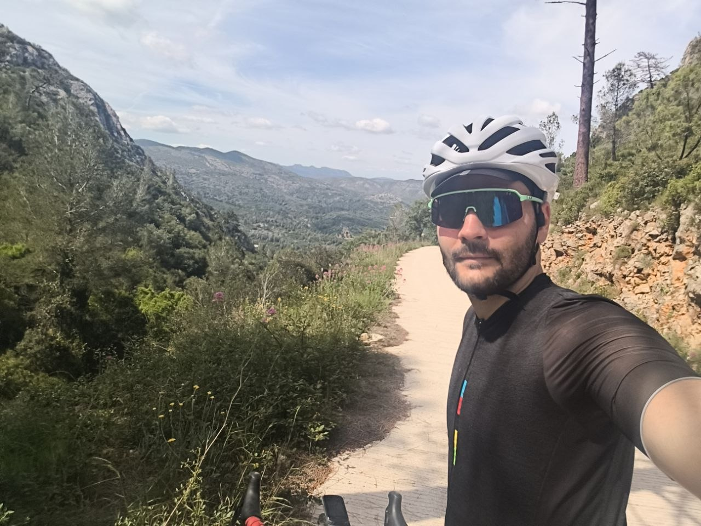
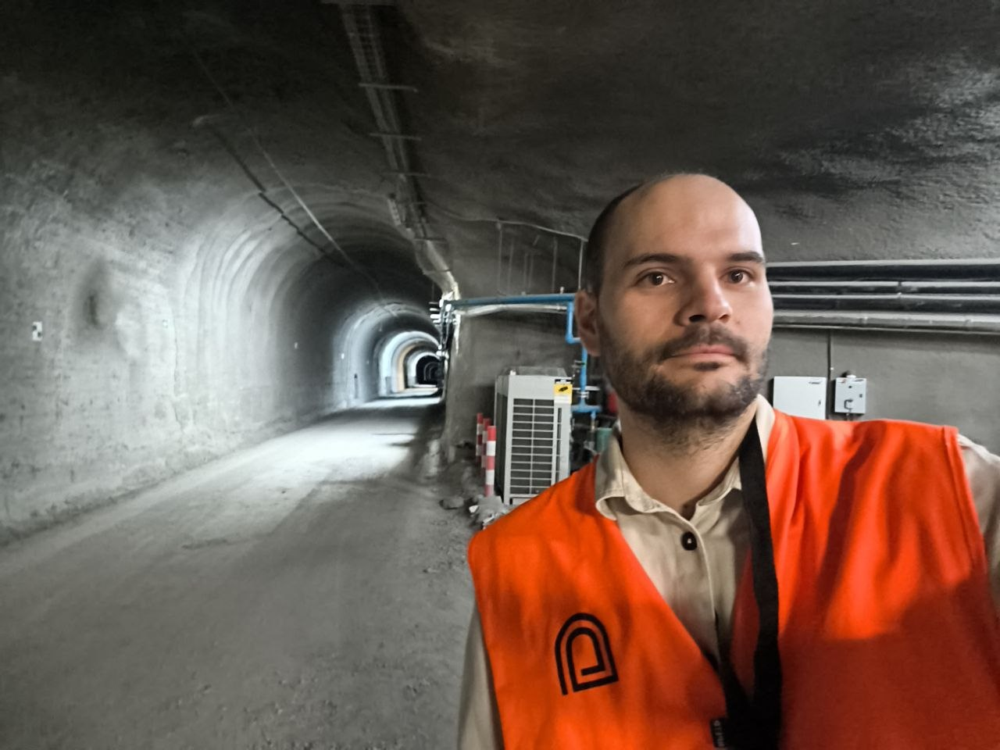
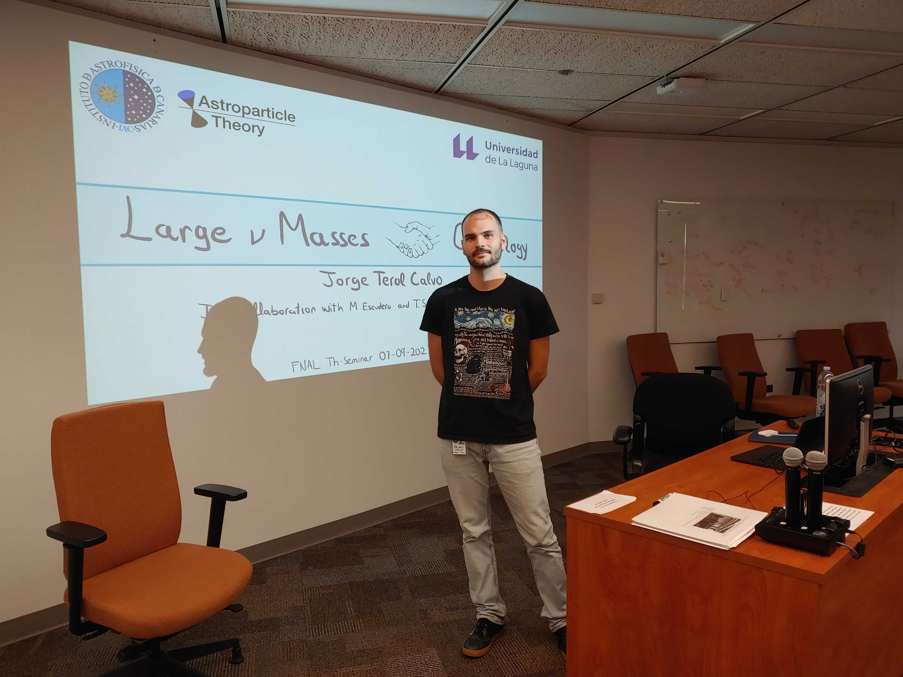
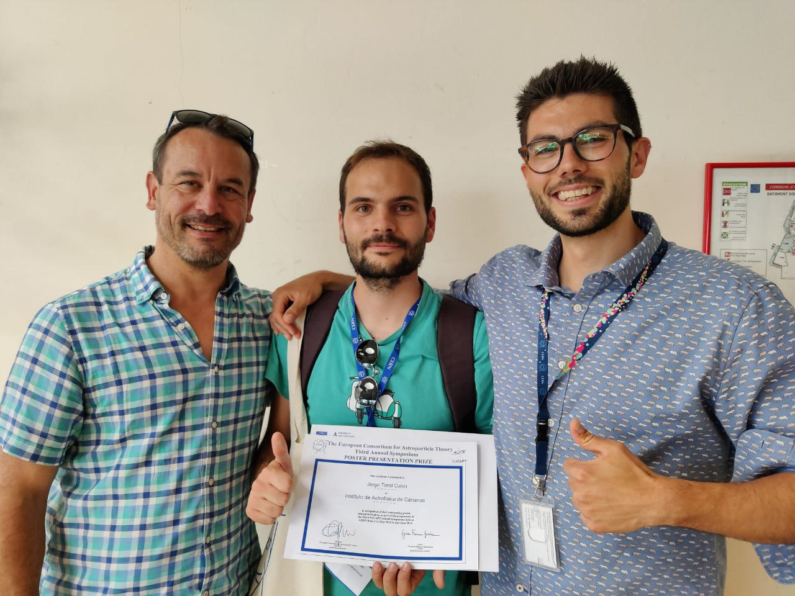
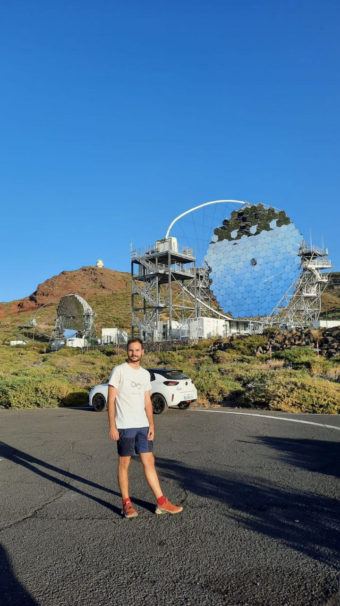
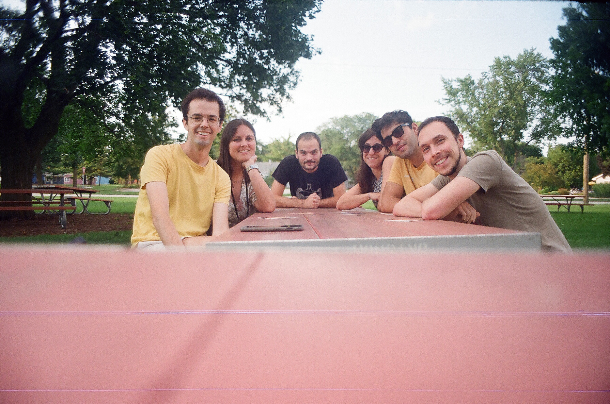

Hi, I'm Jorge
Postdoc in theoretical astroparticle physics · INFN Torino
I try to work out what dark matter is made of. Most of my days go into calculating what we should be seeing in telescopes and underground detectors if one or another idea about dark matter happens to be right, and then checking whether anyone has seen it.
Before Torino I did my PhD at the Instituto de Astrofísica de Canarias in Tenerife, and I have spent shorter stretches at KIT, LAPTh and Fermilab. I am part of the COSMIC WISPers COST Action and of EuCAPT.
What I work on
Dark matter is about 85% of the matter in the universe and we still do not know what it is. For thirty years the leading candidate was a heavy particle, the WIMP, and an extensive experimental programme has not found it. The field has broadened considerably as a result, and my own work splits about evenly between two of those directions.
Axions and ultralight dark matter
The first is the axion: light enough and weakly enough coupled that detecting one takes considerable ingenuity. A great deal of that effort happens in laboratories; my own approach uses the sky, which offers far more dark matter to work with than any experiment can assemble. Axions should occasionally decay into two photons of equal energy, leaving a narrow line on the astrophysical background wherever dark matter accumulates. I have searched for that line in X-rays, in eROSITA data on the Large Magellanic Cloud, and in the near infrared with SPHEREx. At lower masses still, the axion behaves less like a particle than like a wave filling the galaxy, one that would slowly rotate the polarisation angle of any light passing through it. Pulsars provide highly polarised beams and decades of monitoring, which we have used to search for exactly that effect, first with PPTA and QUIJOTE and later with the European Pulsar Timing Array.
Dark matter and the Standard Model
The second asks what happens when dark matter meets Standard Model particles at high energy. If the two interact at all, then the cosmic rays propagating through the Galaxy are already colliding with the halo: a natural particle beam, energetic enough to leave traces worth looking for. In a recent paper I computed what that implies for neutrinos and recast public ANTARES data to set some of the strongest limits available on light dark matter. The argument also runs in reverse: the most energetic neutrino ever detected crossed a great deal of dark matter on its way to us, so the fact that it arrived at all constrains how strongly the two can interact. Extreme astrophysical environments serve as laboratories too: a supernova that cools too quickly would reveal light dark-sector particles carrying energy away.
Where I started: neutrinos
Earlier in my career I worked mostly on neutrinos themselves: why they have mass at all, what their non-standard interactions imply for physics at much higher energies, and how a neutrino heavy enough for laboratory experiments to detect can still be reconciled with what cosmology allows. I still keep a foot in it, and it feeds into the dark matter work more often than I expect.
A few papers
- 2026 Galactic Center Neutrinos from Cosmic Ray–Dark Matter Interactionsunder review
- 2026 Searching for dark matter X-ray lines from the Large Magellanic Cloud with eROSITA
- 2026 The Highest-Energy Neutrino Event Constrains Dark Matter–Neutrino Interactions
- 2025 Searches for signatures of ultralight axion dark matter in polarimetry data of the European Pulsar Timing Array
Outside physics
I grew up in l'Olleria, a Valencian town, studied physics in València, and then kept moving: a year in Mainz on Erasmus, four in Tenerife for the PhD, a spring in Karlsruhe, a few weeks in Annecy, a summer in Chicago, and now Torino. Along the way I picked up enough German and Italian to get by, and my French is still a work in progress.
Away from the desk I am usually on a bike. Road cycling is the hobby that has survived every one of those moves, with trail running a close second. I also go to a lot of concerts, mostly local bands singing in Catalan.






Elsewhere
- Email jortecal@protonmail.com
- INSPIRE inspirehep.net/authors/1774081
- ORCID 0000-0003-3117-5017
- arXiv arxiv.org/a/terolcalvo_j_1
- GitHub github.com/jorgetc16
- Office INFN Sezione di Torino, Via P. Giuria 1, Torino